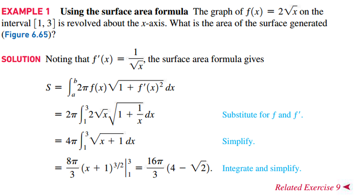
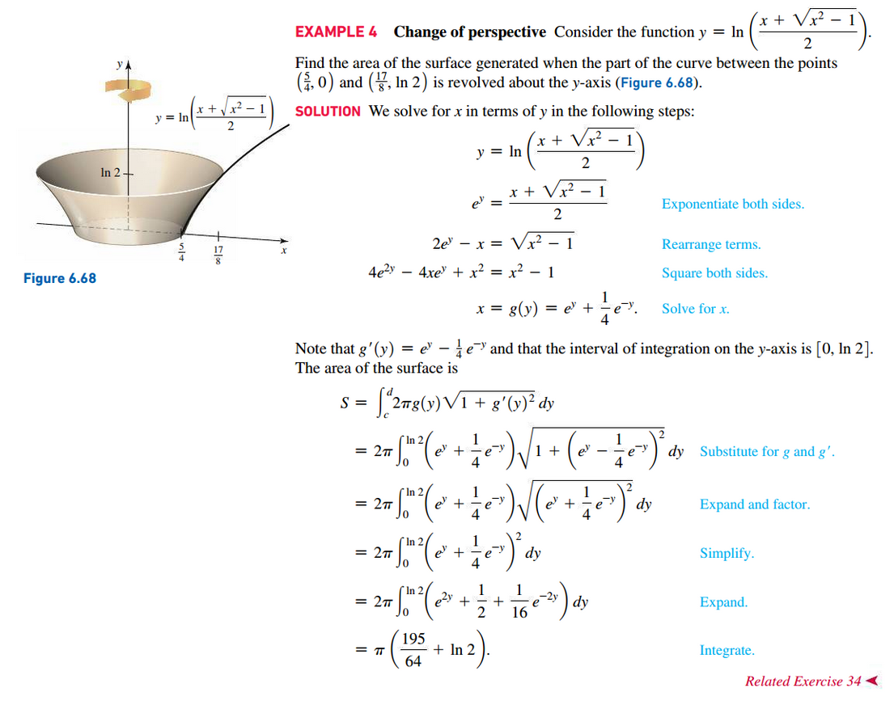
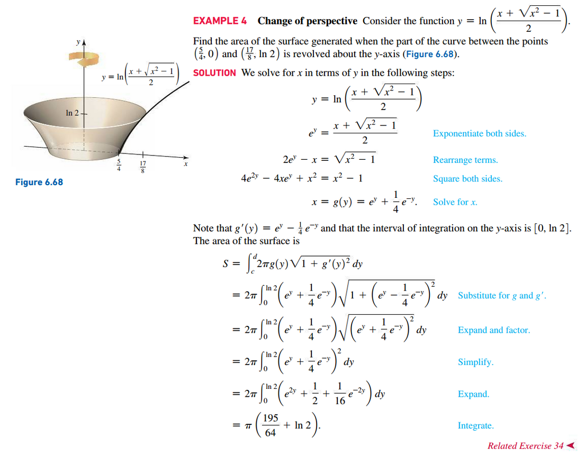

Section 6.6: Surface Area
Surface Area of Frustum
S = \pi (r_{2} + r_{1})l

Definition: Area of a Surface of Revolution
Let f be a nonnegative function with a continuous first derivative on the interval [a, b]. The area of the surface generated when the graph of f on the interval [a, b] is revolved about the x-axis is
S = \int_{a}^{b} 2 \pi f(x) \sqrt{1 + f^{\prime}(x)^{2}}\;dx
 


 

Other Resources
Application of Integration notes from MATH 150
Resources
Textbook
- Calculus, Early Transcendentals 3rd Edition - Briggs, Cochran, and Gillet